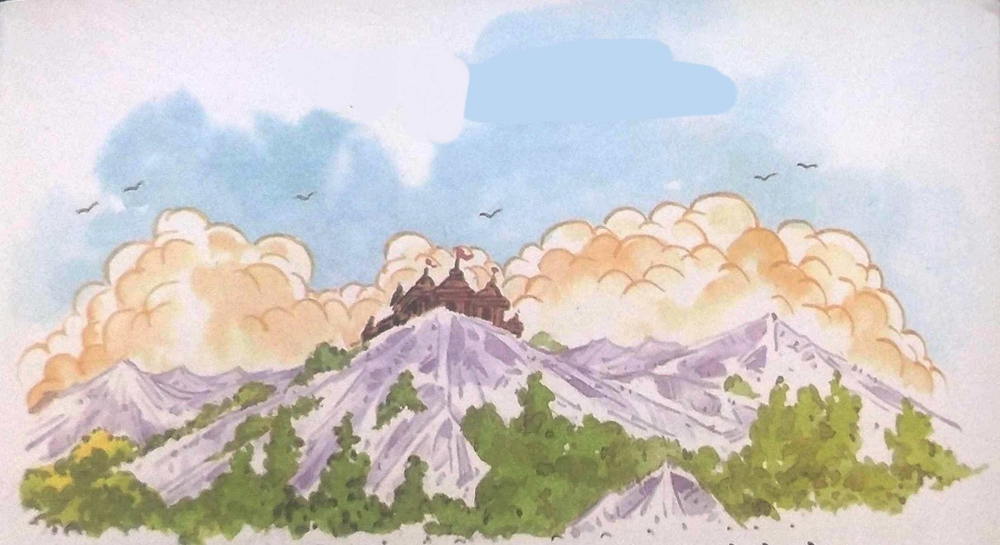
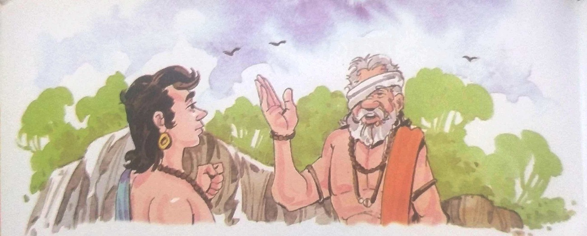
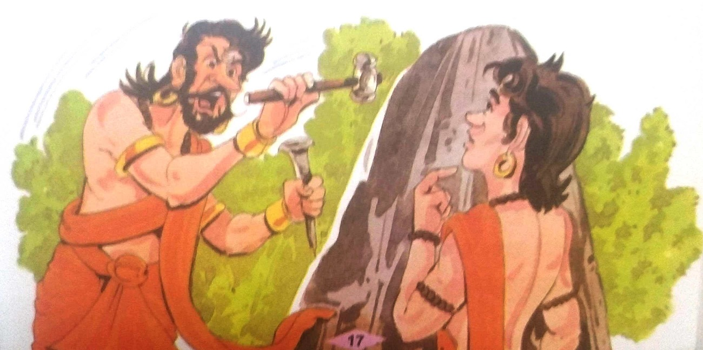
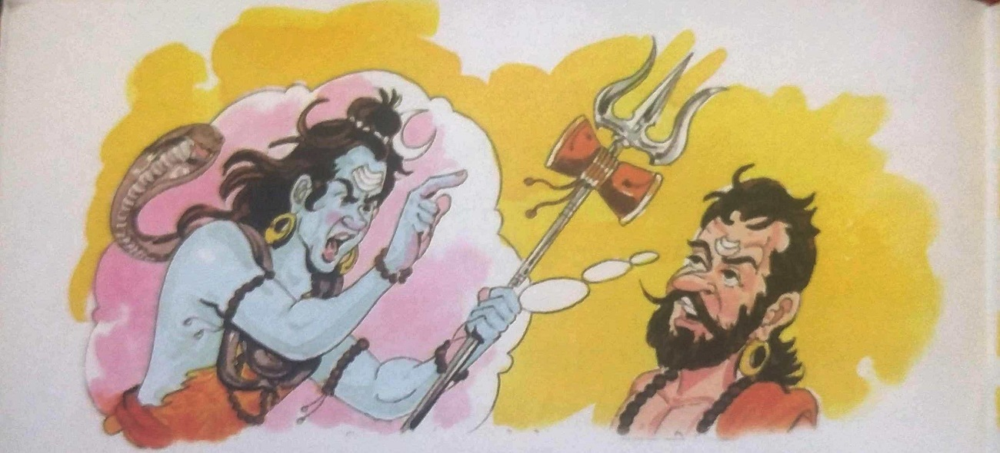
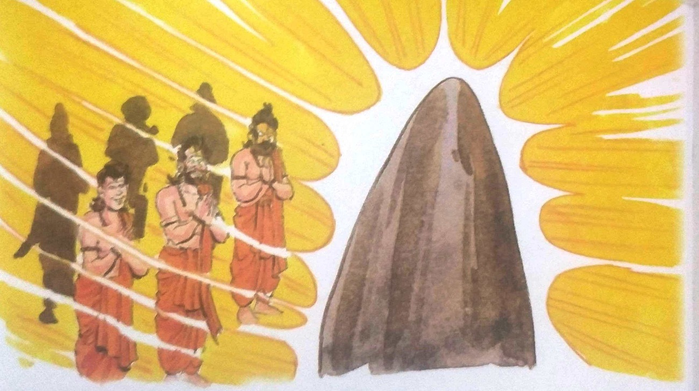

૧૨-શિવલિંગની સ્થાપના

રાજા વિક્રમાદિત્ય થાક્યા અને નિરાશ થયા વિના ફરી વટવૃક્ષ પાસે પહોંચ્યા. તેણે મૃતદેહને
ઝાડ પરથી ઉતારી, તેના ખભા પર મૂક્યો અને ચાલ્યો ગયો. તેઓ માંડ માંડ બે ડગલાં ચાલ્યા હતા ત્યારે
વેતાલે બીજી વાર્તા કહેવાનું શરૂ કર્યું - સુગંધીપુર નામના ગામની નજીક એક ઊંચા પર્વત શિખર પર એક
મોટું ભવ્ય મંદિર હતું, પરંતુ ગામલોકોને ખબર ન હતી કે તે કયું મંદિર છે. ભગવાનનું છે. ખરેખર, તે
મંદિર સુધી પહોંચવાનો કોઈ રસ્તો નહોતો. માર્ગ પણ દુર્ગમ હતો. ત્યાં ઝેરી પ્રાણીઓ અને કાંટાળી ઝાડીઓ
હતી. એ જ ગામમાં દેબુ નામનો યુવક રહેતો હતો. તે ભક્તિ કથાઓ સાંભળીને મોટો થયો હતો. તે શિક્ષિત,
બુદ્ધિશાળી અને હિંમતવાન સ્વભાવનો હતો. નાનપણથી જ તેમને આ પર્વતીય મંદિર વિશે જાણવાની ઉત્સુકતા હતી.
તે ત્યાં જઈને જોવા માંગતો હતો કે તે મંદિરમાં કયા ભગવાનનો વાસ છે. એક દિવસ પોતાની લાગણી માતાને
કહેતાં તેણે કહ્યું, "મા! મારે પર્વત પર સ્થિત મંદિરમાં જવું છે." આ સાંભળીને માતાએ કહ્યું, "દીકરા!
ત્યાં જવાનો વિચાર પણ ન કર. એકવાર અમારા ગામમાં, શિવાલયના મુલાકાતીએ પણ ત્યાં જવાનો પ્રયાસ કર્યો,
પરંતુ તે ગરીબ વ્યક્તિએ તેની એક આંખ ગુમાવી દીધી. તેથી જ હું તમને ત્યાં જવાની મંજૂરી આપી શકું
નહીં."

માતાની વાત સાંભળીને દેવ કંઈ બોલ્યો નહિ. પરંતુ પહાડી મંદિરના દર્શન કરવાની તેની ઈચ્છા
જરા પણ ઓછી ન થઈ. તે બીજા દિવસે બૈરાગીને મળવા ગયો અને તેને પોતાની ઈચ્છા જણાવી. બૈરાગીએ કહ્યું,
"તે મંદિર સુધી પહોંચવું એ કોઈ અશક્ય કામ નથી. હું પણ ત્યાં ગયો હતો, પરંતુ ક્રોધિત યક્ષના શ્રાપને
કારણે મારી એક આંખ ગુમાવી દીધી હતી. હું તમને ત્યાં જવાનો રસ્તો કહું. આગળ તમારું નસીબ"
બૈરાગી પાસેથી ઉપાય જાણીને દેવુ ઘરે પાછો ફર્યો. પરંતુ તેણે આ વાત તેની માતાને કહી ન
હતી. પછી બે-ચાર દિવસ પછી, તે ભગવાન શિવના પ્રિય બેલના પાંદડા સાથે પર્વત તરફ જવા લાગ્યો. બૈરાગીના
મતે ભગવાન શિવનું સ્વરૂપ એક ખડક પર કોતરવામાં આવ્યું હતું. ત્યાં દેવુએ માથું નમાવ્યું અને વેલાના
પાન ભગવાનના ચરણોમાં અર્પણ કર્યા. થોડા સમય પછી, તેણે તે વેલાના પાંદડા ઉપાડ્યા અને તેને તેના માથા
પર મૂક્યા. આ પાંદડાઓના પ્રતાપને કારણે ન તો કાંટા પગમાં ચડ્યા કે ન તો ઝેરીલા પ્રાણીઓ નજીક આવ્યા.
બૈરાગીએ સખત મનન કર્યા પછી આ રહસ્ય જાણી લીધું અને પછી દેવુને કહ્યું.
દેવુ આગળ વધી રહ્યો હતો. રસ્તામાં તેણે પથ્થર પર છીણી અથડાવાનો અવાજ સાંભળ્યો. તેણે
જોયું કે એક ભગવાન છીણી વડે એક પથ્થર પર શિવલિંગ કોતરતા હતા. એ પથ્થર પર ઘણી તિરાડો હતી. દેવુને
સમજવામાં લાંબો સમય ન લાગ્યો કે બૈરાગીએ જે બાજુ કહ્યું હતું તે આ જ છે. તે યક્ષ પાસે ગયો અને આદર
અને નમ્રતા સાથે નમન કર્યું.
દેવપુરુષે દેવુ તરફ જોયું. તેની આંખોમાંથી આગ વરસી રહી હતી. તેણે ગુસ્સામાં કહ્યું,
"માણસ બનીને મારી પાસે આવવાની તારી હિંમત કેવી રીતે થઈ? હું યક્ષ દેવ છું. તમારી જેમ જ એક વૈરાગ્ય
મારી પાસે આવ્યો અને શ્રાપ પામ્યો અને તેની એક આંખ ગુમાવી દીધી. મનુષ્ય અહીં સુધી પહોંચી શક્યો
નહીં, તેથી અમે યક્ષદેવ છીએ. પર્વતીય માર્ગ દુર્ગમ. પણ તમે હજી પણ અહીં કેવી રીતે પહોંચી શક્યા?"

યક્ષની વાત સાંભળીને દેવુએ નિર્ભયતા અને નમ્રતાથી કહ્યું, "હે યક્ષદેવ! તમે જેને શ્રાપ
આપ્યો હતો તે બૈરાગીએ મને કહ્યું કે તમે લોકો ભગવાન શિવનો કેટલો અનાદર કરો છો, તમે કેટલો મોટો અપરાધ
કરો છો. મને ખબર છે કે ઘણા સમય પહેલા એક આદિવાસી અહીં આવ્યો હતો. અને લિંગના આકારમાં એક મોટો પથ્થર
જોઈને તેની પૂજા કરવા લાગ્યો.તમે તેને જોઈને યક્ષ બોલ્યા, “હે મૂર્ખ. તમે પથ્થરની પૂજા કરો છો અને
ભગવાન શિવના નામનો જપ કરો છો. આ એક મોટો ગુનો છે." પછી તમે તેને પથ્થર તોડીને ત્યાંથી ભગાડી દીધો.

દેવુએ તેનું વાક્ય પૂરું પણ કર્યું ન હતું કે યક્ષે તેને અટકાવ્યો અને કહ્યું, “તમે જે
યક્ષની વાત કરો છો તેમાંથી હું એક હતો. મારું નામ યશોધન છે. શું તમે જાણો છો? જે ક્ષણે અમે
આદિવાસીઓને અહીંથી ભગાડ્યા, ત્યારે ભગવાન શિવે ગંભીર સ્વરે કહ્યું, 'તમે લોકોએ મારા ભક્તનો પીછો
કરીને મોટો ગુનો કર્યો છે. આટલું જ નહીં, તમે મારા તે સ્વરૂપને પણ તોડી નાખ્યું, જેની તે સાચા
હૃદયથી પૂજા કરતો હતો. માટે હવે તમે લોકો મારા માટે મંદિર બનાવો અને તેના ગર્ભગૃહમાં એક શિવલિંગ
સ્થાપિત કરો જેના પર કોઈ લેપ નથી. આ કાર્ય મારા નિઃસ્વાર્થ ભક્ત દ્વારા જ શક્ય બની શકે છે. જ્યાં
સુધી આ કામ ન થાય ત્યાં સુધી તમે લોકો આ પહાડ છોડીને તમારી દુનિયામાં નહીં જઈ શકો."
દેબુએ આશ્ચર્ય સાથે પૂછ્યું, "શું કોટિંગ વિના શિશ્ન બનાવવું મુશ્કેલ કામ છે?" પોતાની
અસમર્થતા વ્યક્ત કરતાં યક્ષે કહ્યું, "અમે મંદિર તો બનાવ્યું છે, પરંતુ એવું લાગે છે કે કોટ વગરનું
શિવલિંગ બનાવવું એ અસંભવ કાર્ય છે. તમે જોઈ શકો છો કે, આ શિવલિંગની મધ્યમાં તિરાડો દેખાઈ રહી છે."

દેબુએ કાળજીપૂર્વક યક્ષના પડી ગયેલા ચહેરા તરફ જોયું અને પછી તે યક્ષદેવ દ્વારા બનાવેલા
શિવલિંગ તરફ જોવા લાગ્યો. તેણે હાથ જોડીને ભગવાન શિવનું સ્મરણ કર્યું અને કહ્યું, "હે મહાશિવ! અમે
સામાન્ય માનવી છીએ જે તમારી ભક્તિભાવથી પૂજા કરીએ છીએ. માત્ર મારા ગામવાસીઓ જ નહીં, તમારા અન્ય
ભક્તો પણ તમારી પૂજા કરવા માટે ઉત્સુક છે. મંદિરમાં જ પ્રતિષ્ઠિત થાઓ."
બીજી જ ક્ષણે તિરાડો ધરાવતું શિવલિંગ ચમકવા લાગ્યું અને થોડી જ વારમાં ત્યાંથી અદ્રશ્ય
થઈને ગર્ભગૃહમાં આશ્રિત થયું. દેબુ અને યક્ષદેવ તરત જ મંદિર તરફ દોડ્યા. પર્વત પર અન્ય લોકો ત્યાં
પણ પહોંચી ગયા. બધાએ મળીને શિવલિંગનો અભિષેક કર્યો. પછી યક્ષદેવે બાકીના બધા યક્ષો સાથે દેવુનો
પરિચય કરાવ્યો. યક્ષદેવે દેવુને કહ્યું, "હવે અમારા યક્ષો માટે અહીં રહેવું યોગ્ય નથી. તમને
મહાશિવમાં અપાર શ્રદ્ધા છે. તમે તેમના પ્રેમને પાત્ર છો. તેથી, હવે તમારે મંદિરની સંભાળ લેવાની
જવાબદારી લેવી પડશે."
"તમે મને આ માટે લાયક ગણ્યો છે, એ મારું સૌભાગ્ય છે. મંદિરમાં બિરાજેલા ભગવાન શિવના
દર્શનનો લહાવો દરેક મનુષ્યને મળે અને બૈરાગીને તેની દૃષ્ટિ પાછી મળે. પણ કૃપા કરીને મને માફ કરો,
હું જવાબદારી નિભાવી શકતો નથી. મંદિરની. હવે મને તમારી પરવાનગી જોઈએ છે." આટલું કહી દેબુ ત્યાંથી
ચાલ્યો ગયો. વાર્તા પૂરી કર્યા પછી વેતાલાએ રાજાને કહ્યું, "હે રાજા! યક્ષ મંદિરમાં શિવલિંગની
સ્થાપના કરી શક્યો ન હતો, પરંતુ દેબુએ તે કર્યું. જ્યારે તેમને મંદિરનો હવાલો લેવાનું કહેવામાં
આવ્યું તો તેમણે ના પાડી દીધી. શું શિવલિંગની સ્થાપના થતાં જ તે પોતાને મહાન માનવા લાગ્યો હતો? કે
તે વખતે તેની બુદ્ધિ પથરાઈ ગઈ હતી? શું ત્યાં સ્વાર્થ ઊભો થયો હતો? મારી આ શંકાઓનું સમાધાન જાણ્યા
પછી પણ તું ચૂપ રહીશ તો તારું માથું ટૂકડા થઈ જશે.
રાજા વિક્રમાદિત્યએ કહ્યું, "દેવ નાનપણથી જ ભક્તિ કથાઓ સાંભળીને મોટા થયા હતા. તેઓ એક
શિક્ષિત અને નિર્ભય યુવાન હતા. તેથી જ તેઓ પર્વત પર ચઢી શક્યા હતા. તેમની નિઃસ્વાર્થ ભક્તિના કારણે
જ ત્યાં શિવલિંગની સ્થાપના કરવામાં આવી હતી. તેમના આંખો તેમની સમક્ષ બનેલી આ અનોખી ઘટનાએ તેમની
ભક્તિભાવમાં વધુ વધારો કર્યો.આધ્યાત્મિક બાબતોને વધુ ઊંડાણપૂર્વક જાણવાની તેમની તીવ્ર ઈચ્છા
જાગી.અને આ કાર્ય મંદિરની સંભાળ રાખવા કરતાં વધુ મહત્ત્વનું બની ગયું.આવી ભક્તિભાવથી ભરેલા
મનુષ્યોમાં ન તો બુદ્ધિ હોય છે કે ન હોય છે. તેમાં ન તો શિથિલતા છે કે ન તો સ્વાર્થની સંડોવણી
છે.મહાશિવને જોવાની ઈચ્છા એ એક મહાન ઉત્કંઠા છે, એક ઉત્કટ છે. મંદિરમાં શિવના દર્શન કર્યા પછી,
ત્યાંથી તેમનું વિદાય એ આધ્યાત્મિક ઉંચાઈઓ પર ચઢવાનું છે. માનવ કલ્યાણ માટે કરેલો આ પ્રયાસ શ્રેષ્ઠ
છે. જ્યારે વેતાલ રાજા વિક્રમાદિત્યએ મૌન રહેવાની શરત તોડી, તે ફરીથી તે જ વૃક્ષ પર ઉડી ગયો અને
પોતાને લટકાવી દીધો.
|